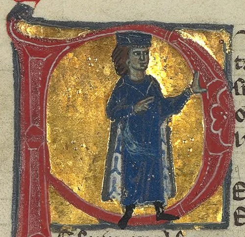
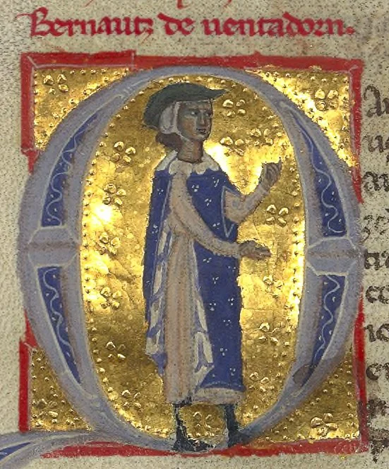
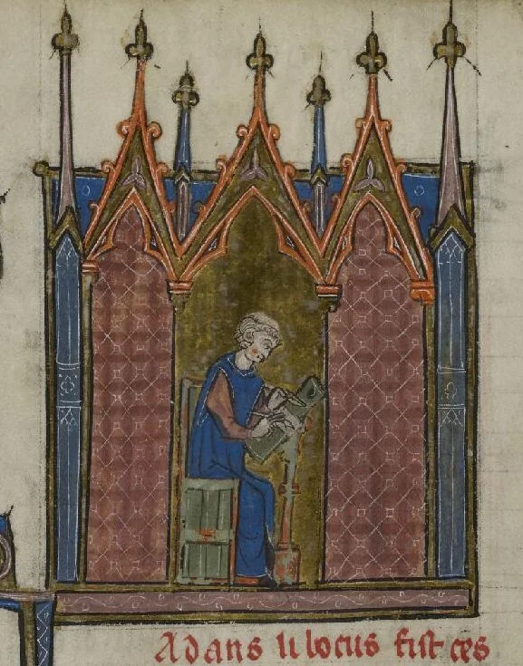

Figuras menores
- Leé esta página entera.
- Respondé en voz alta las preguntas del final y anotá lo que te costó en ✎ Mis notas.
Objetivo: conocer a los trovadores y troveros, la gran tradición musical profana medieval en paralelo a la música religiosa, con una reseña breve de sus figuras principales.
Quiénes eran los trovadores
Mientras la música religiosa se desarrollaba en latín dentro de catedrales y monasterios (lecciones 2.3 a 2.8), floreció en paralelo, a partir del siglo XI, una tradición musical profana (es decir, no religiosa) en lenguas vernáculas (las lenguas que la gente hablaba en su vida diaria, no el latín): el "occitano" (la lengua del sur de Francia) en el caso de los trovadores, y el francés del norte en el caso de los troveros ("trouvères"). Cantaban, en su mayoría, sobre el "amor cortés": un código poético-romántico idealizado donde un caballero expresa una devoción casi religiosa por una dama (a menudo casada, a menudo inalcanzable), cargado de un vocabulario de servicio, sufrimiento y devoción muy codificado, que va a influir en la literatura amorosa europea durante siglos.
A diferencia de los compositores religiosos, muchos trovadores eran ellos mismos nobles (incluso de muy alto rango) que componían como parte de su cultura cortesana, aunque también había trovadores de origen humilde que lograban prestigio solo por su talento. La música se transmitía sobre todo de forma oral, acompañada de laúd o vihuela de rueda (lección 2.2), y recién a partir del siglo XII empieza a anotarse con cierta regularidad en manuscritos llamados "chansonniers" (cancioneros).
Guillermo de Aquitania (1071-1126)

Duque de Aquitania y uno de los nobles más poderosos de Francia en su época (su nieta fue la célebre Leonor de Aquitania, reina de Francia y luego de Inglaterra), es considerado el primer trovador conocido por nombre. De su obra sobreviven solo once poemas (sin notación musical conservada, lamentablemente), con un tono que va de lo abiertamente erótico y hasta obsceno hasta la reflexión filosófica sobre la vejez y la muerte, lo que muestra que la poesía trovadoresca, ya desde su figura fundacional, no era un género de un solo registro emocional.
Bernart de Ventadorn (activo h. 1147-1170)

De origen humilde (algunas fuentes medievales, probablemente legendarias, dicen que era hijo de un panadero o de un sirviente del castillo de Ventadorn), es considerado el trovador más influyente desde el punto de vista poético y musical de su generación, con 45 poemas conservados (18 de ellos con su melodía original). Su canción "Can vei la lauzeta mover" ("Cuando veo a la alondra moverse") es una de las piezas más estudiadas del repertorio trovadoresco, con una melodía fluida que acompaña una reflexión sobre el amor no correspondido.
Adam de la Halle (h. 1245-1288)

Trovero del norte de Francia (de Arras), es una figura de transición importante porque, además de canciones monofónicas en la tradición trovadoresca clásica, compuso también una de las primeras obras de teatro musical profano de la historia europea, "Le Jeu de Robin et Marion" ("El juego de Robin y Marion"), una pieza pastoral con diálogo cantado que se considera un antecedente lejano de la ópera comique y del teatro musical popular. También experimentó con la polifonía (algo poco común entre trovadores y troveros, que en su mayoría escribían música monofónica), lo que muestra la influencia cruzada entre la tradición cortesana profana y las técnicas desarrolladas en paralelo por la escuela de Notre Dame.
Por qué importan juntos
Los trovadores y troveros representan la gran tradición musical profana de la Edad Media, en una época donde la mayor parte de lo que se conservó por escrito fue religioso. Su existencia nos recuerda que la música medieval no era solo canto gregoriano y polifonía sacra: había todo un universo de canción de amor, entretenimiento cortesano y, con Adam de la Halle, incluso teatro musical profano, que compartía el escenario cultural con la música de la Iglesia sin depender directamente de ella.
Preguntas de repaso
- ¿Qué diferencia principal hay entre un "trovador" y un "trovero"?
- ¿Qué es el "amor cortés" y qué rol juega en la poesía trovadoresca?
- ¿Por qué Guillermo de Aquitania es una figura fundacional pese a que no sobrevivió ninguna melodía suya?
- ¿Qué logró Adam de la Halle que lo distingue de la mayoría de los trovadores y troveros?
Respuestas
- La diferencia principal es la lengua: los trovadores cantaban en occitano, la lengua del sur de Francia, mientras que los troveros ("trouvères") cantaban en francés del norte. Ambas tradiciones comparten temática y estilo (el amor cortés) pero se distinguen geográfica y lingüísticamente.
- Es un código poético-romántico idealizado donde un caballero expresa una devoción casi religiosa por una dama, a menudo casada o inalcanzable, usando un vocabulario de servicio, sufrimiento y devoción muy codificado. Es el tema central de la inmensa mayoría de la poesía trovadoresca y va a influir en la literatura amorosa europea durante siglos.
- Porque es la primera figura identificada por nombre dentro de esta tradición: aunque de su obra solo sobreviven once poemas sin su notación musical original, el hecho de ser el primer trovador conocido lo convierte en el punto de partida documentado de todo el movimiento trovadoresco posterior.
- Compuso una de las primeras obras de teatro musical profano de la historia europea ("Le Jeu de Robin et Marion"), con diálogo cantado, y además experimentó con la polifonía, algo poco común entre trovadores y troveros, que en su mayoría escribían música monofónica. Esto lo convierte en una figura de transición entre la tradición cortesana clásica y las técnicas más complejas desarrolladas en paralelo por compositores como Léonin y Pérotin.